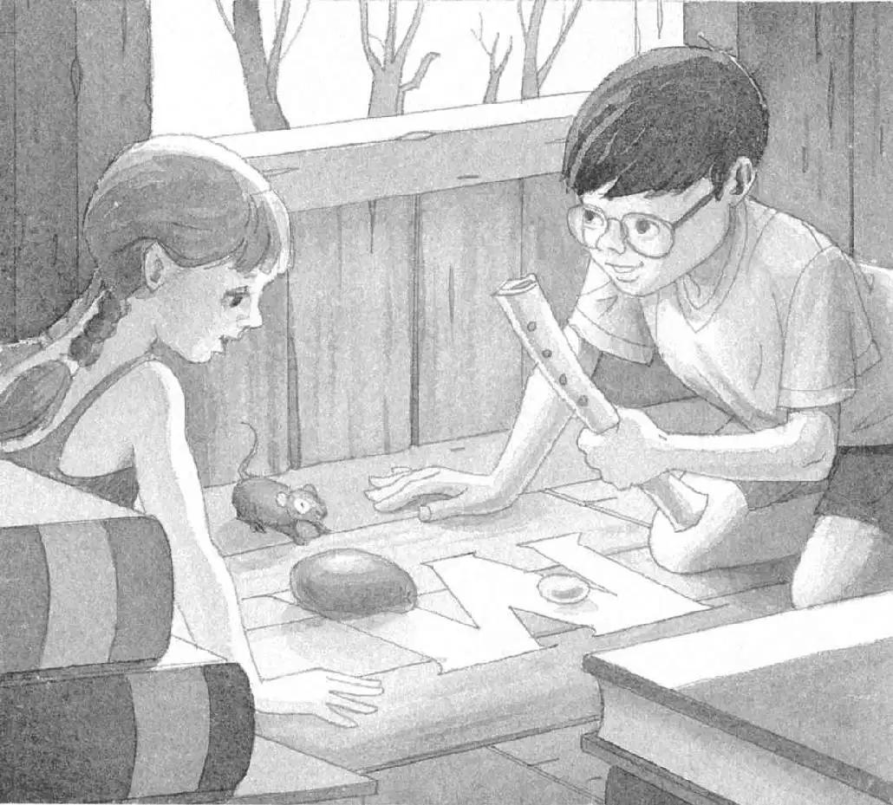
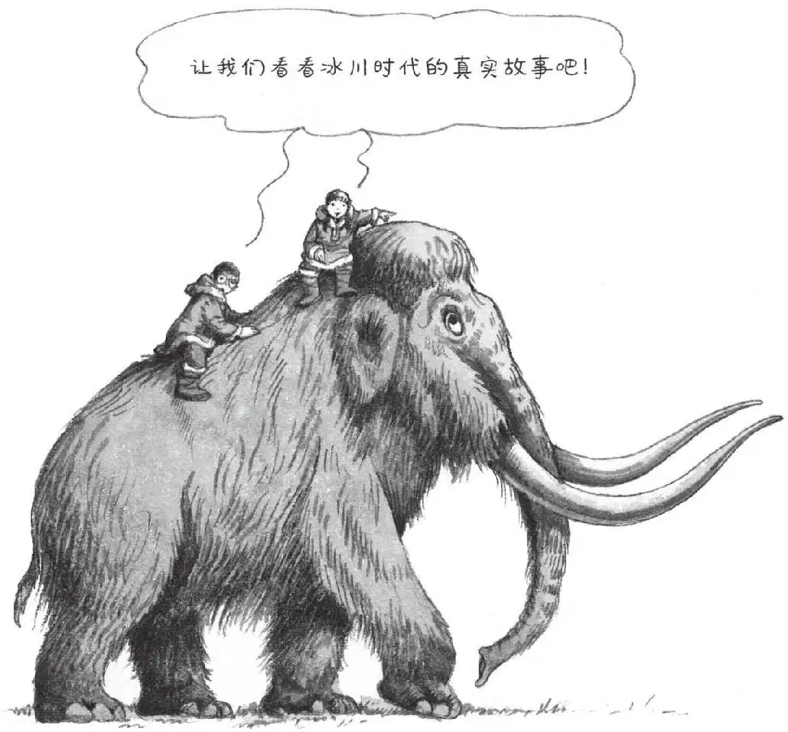

鸟儿在唱歌。空气温暖而湿润。
“真希望他们找到了大衣。”安妮说。
“我也是。”杰克回答。他把眼镜往上推了推。
“吱吱。”
“嘿，你是怎么找到那个巫师的？”安妮问小老鼠。
“吱吱。”
“这是一个秘密，对吗？”安妮说。
她转向杰克，问：“笛子呢？”
杰克举起那根猛犸象骨头，然后把它放在地板上刻着的那个字母M上。摆在旁边的，是在热带雨林找到的杧果和在忍者时代找到的月光石。
“月光石、杧果、猛犸象骨头……”安妮说，“还差最后一样，仙女摩根就能从魔咒中解放出来了。”
“明天吧。”杰克说。
安妮拍了拍小老鼠的脑袋说：“再见啦！”
然后她开始顺着绳梯往下爬。
杰克也收拾好了自己的东西。

他迟疑了一下，看了看小老鼠。小老鼠用它那双乌溜溜的大眼睛望着他。
“再次感谢你帮了我们。”杰克说。
然后他顺着绳梯爬了下去，跳到地面上。
杰克和安妮跑出蛙溪树林，来到了他们家所在的那条街道上。
在夕阳的余晖中，他们家所在的那片小区好像被镀了一层红色。
“回到现代真是太棒了，”杰克想，“温暖、安全，而且马上就到家了。”
“真高兴我们用不着为了晚饭去打猎。”他说。
“是啊，爸爸妈妈已经打过猎了，”安妮说，“是在超市打的。”
“我希望他们打到的是一些通心粉和肉丸子。”杰克说。
“我希望他们打到的是一盒比萨。”安妮说。
“快走吧，我已经饿坏了。”杰克说。
他们快步穿过家门口的人行道，跑进了家门。
“我们到家了！”安妮喊道。
“晚饭吃什么？”杰克大声问。
